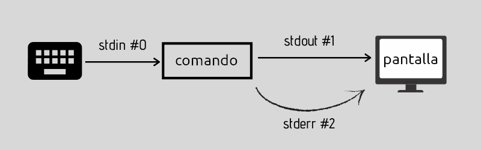
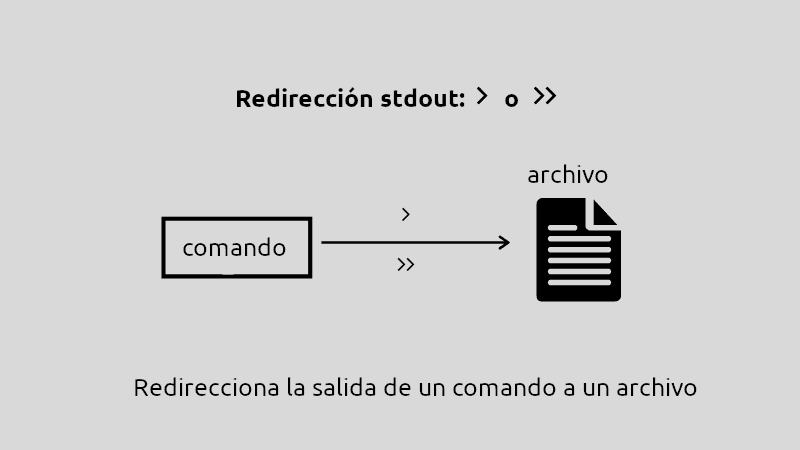
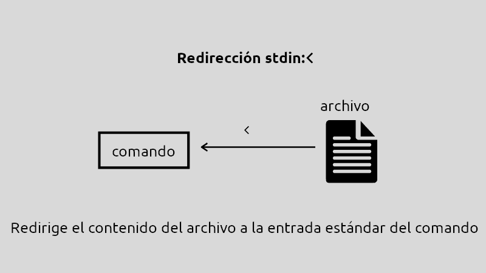
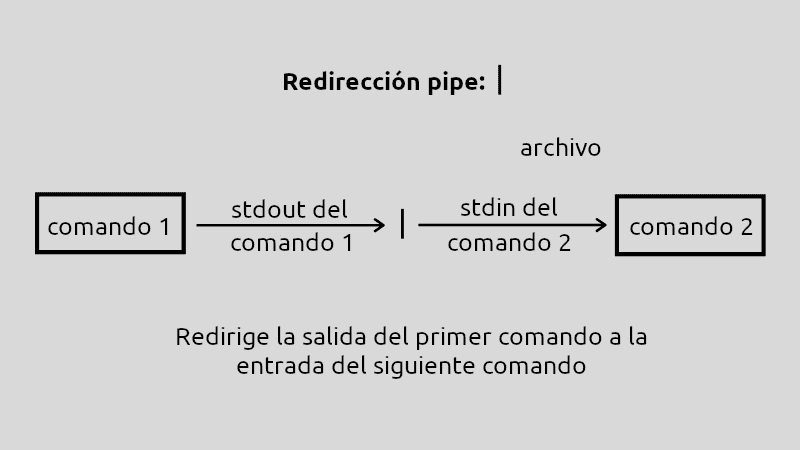

Redireccionamiento y Tuberías
Una de las características más potentes de Linux es la capacidad de conectar comandos entre sí y redirigir su entrada y salida. Esto permite crear flujos de trabajo complejos combinando comandos simples.
Dispositivos Estándar
En Linux, los dispositivos se tratan como archivos. Cada terminal tiene asociados tres dispositivos especiales para la comunicación:
Dispositivos de Entrada/Salida
| Dispositivo | Nombre | Descriptor | Descripción | Enlace en /dev |
|---|---|---|---|---|
| Entrada estándar | stdin | 0 | Teclado (de donde se lee) | /dev/stdin |
| Salida estándar | stdout | 1 | Monitor (donde se escribe) | /dev/stdout |
| Salida de error | stderr | 2 | Monitor (donde se muestran errores) | /dev/stderr |
{kind=link}

Por defecto
- Los comandos leen del teclado (stdin)
- Los comandos escriben en el monitor (stdout)
- Los errores se muestran en el monitor (stderr)
El dispositivo especial: /dev/null
Es un dispositivo especial que actúa como un "agujero negro": todo lo que se envía ahí desaparece.
Uso práctico
Se usa para descartar salidas que no nos interesan:
Operadores de Redireccionamiento
> - Redirigir salida (sobrescribe)
Redirige la salida estándar a un archivo. Si el archivo existe, lo sobrescribe.
Sintaxis
Ejemplos
ls > listado.txt # Guarda la lista en listado.txt
echo "Hola mundo" > saludo.txt # Crea archivo con el texto
date > fecha.txt # Guarda la fecha actual
Sobrescribe el archivo
Si listado.txt ya existía, su contenido anterior se pierde.
Ejemplo práctico
>> - Redirigir salida (añade)
Redirige la salida estándar a un archivo. Si el archivo existe, añade al final sin borrar el contenido anterior.
Sintaxis
{kind=link}

Ejemplo comparando > con >>
echo "Primera línea" > log.txt # Crea el archivo
echo "Segunda línea" >> log.txt # Añade al final
echo "Tercera línea" >> log.txt # Añade al final
Contenido de log.txt:
Comparación
< - Redirigir entrada
Redirige la entrada estándar desde un archivo en lugar del teclado.
Sintaxis
{kind=link}

Uso menos común
Este operador se usa menos porque la mayoría de comandos aceptan archivos como parámetros:
Ejemplo con tr
El comando tr no acepta archivos como parámetro, solo lee de stdin:
2> - Redirigir errores
Redirige la salida de error (stderr) a un archivo.
Sintaxis
Ejemplos
Ejemplo práctico
2>> - Redirigir errores (añade)
Igual que 2> pero añade al final del archivo sin sobrescribir.
Combinar salida y errores
Redirigir ambos al mismo archivo
Explicación:
> salida.txt: Redirige stdout a salida.txt2>&1: Redirige stderr (2) a donde apunta stdout (1)
Forma moderna (Bash 4+)
Ejemplos prácticos
Separar salida y errores
| - Tubería (Pipe)
El pipe es el operador más potente. Conecta la salida de un comando con la entrada del siguiente.
Sintaxis
Estos tres comandos se ejecutarían de esta manera:
{kind=link}

Ejemplos básicos
Ejemplos con múltiples pipes

Ejemplos Prácticos Completos
Ejemplo 1: Gestión de logs
Ejemplo 2: Búsqueda y filtrado
Ejemplo 3: Procesamiento de texto
Ejemplo 4: Suprimir errores
Comandos Útiles con Pipes
tee - Duplicar salida
Muestra la salida en pantalla Y la guarda en archivo.
ejemplos de tee
xargs - Construir comandos
Convierte la entrada en argumentos para otro comando.
Ejemplos de paso de parámetros mediante | y xargs
Casos de Uso Reales
Administración de sistemas
Análisis de archivos
Procesamiento de datos
Tabla Resumen de Operadores
| Operador | Descripción | Ejemplo |
|---|---|---|
> |
Redirige salida (sobrescribe) | ls > lista.txt |
>> |
Redirige salida (añade) | date >> log.txt |
< |
Redirige entrada | wc -l < archivo.txt |
2> |
Redirige errores (sobrescribe) | find / 2> errores.txt |
2>> |
Redirige errores (añade) | comando 2>> errores.log |
&> |
Redirige todo (salida + errores) | comando &> todo.txt |
2>&1 |
Redirige errores a salida | comando > out.txt 2>&1 |
| |
Pipe (conecta comandos) | cat file | grep "text" |
> /dev/null |
Descarta salida | comando > /dev/null |
2> /dev/null |
Descarta errores | comando 2> /dev/null |
Ejercicios Prácticos
Ejercicio 1: Redirecciones básicas
- Lista los archivos de tu home y guarda el resultado en
lista.txt - Añade la fecha actual al final de
lista.txt - Muestra el contenido de
lista.txt
Ejercicio 2: Gestión de errores
- Intenta listar
/root(sin permisos) y guarda el error enerror.txt - Busca archivos
.confen/guardando solo los resultados (sin errores) - Ejecuta un comando cualquiera descartando toda salida
Ejercicio 3: Tuberías
- Lista los procesos y busca los que contengan "bash"
- Cuenta cuántos usuarios hay en
/etc/passwd - Muestra las últimas 10 líneas de
/var/log/syslogfiltrando por "error"
Ejercicio 4: Combinado
- Crea un archivo con los 20 directorios más grandes de tu home
- Busca archivos
.logen/var, cuenta cuántos hay, guarda el resultado - Lista todos los usuarios del sistema, ordénalos y elimina duplicados
Patrones Comunes
Guardar salida y mostrar en pantalla (tee)
Buenas Prácticas
Recomendaciones
- ✅ Usa
>>en logs para no perder información anterior - ✅ Redirige errores a
/dev/nullcuando sean esperables - ✅ Usa pipes para combinar comandos simples
- ✅ Prueba cada comando por separado antes de encadenarlos
- ✅ Usa
teecuando quieras ver la salida Y guardarla
Consejos
- 💡 Los pipes son más eficientes que usar archivos temporales
- 💡 Combina
grepcon pipes para filtrar resultados - 💡 Usa
lessal final de pipes largos para paginar - 💡 El orden de los comandos en un pipe importa
Precauciones
- ⚠️ Ten cuidado con
>, sobrescribe sin avisar - ⚠️ Verifica rutas antes de redirigir a archivos importantes
- ⚠️
2>&1debe ir después de>, no antes - ⚠️ Los pipes fallan silenciosamente si un comando falla